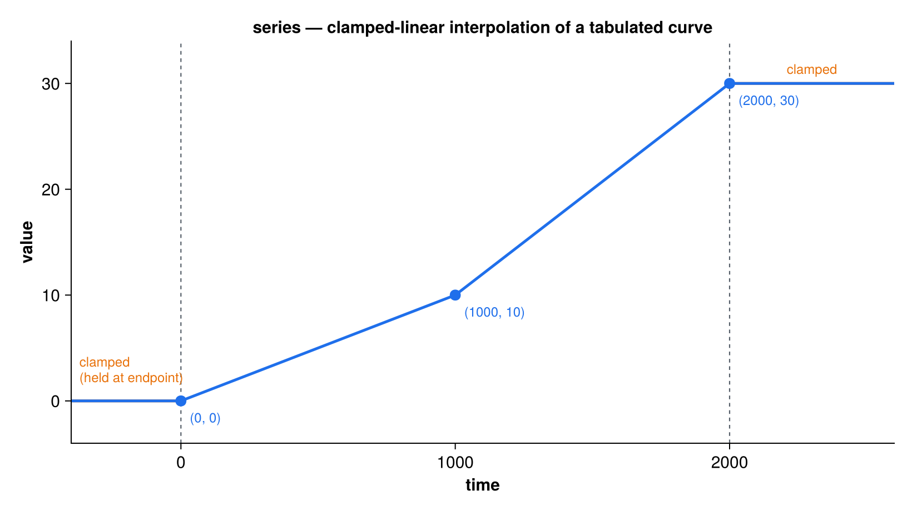

series
Tabulated time-series reader (scalar or multi-channel)
series is a lightweight reader for a scalar or multi-channel forcing/index curve tabulated over time. A series_class holds an ordered time axis and one or more value channels (nc), interpolated in time on demand. It is the 0-D/1-channel cousin of varslice (which handles gridded x-y-z-time fields): reach for series when you just need a scalar (nc=1) or multi-channel (nc>1, e.g. 12 monthly values) curve.
Interpolation is clamped-linear — endpoints are held flat outside the file’s time range — and is agnostic to the meaning of time: whatever axis you pass must match the file’s own axis (absolute year, year BP, elapsed time, …).

File formats
The format is auto-detected from the filename extension (override with the fmt argument):
- ASCII — a whitespace-delimited table
time v1 [v2 ...]; the channel count isnc = ncols − 1. Blank lines and lines beginning with#or!are skipped. - netCDF — a named value variable over a time coordinate. The variable may be 1-D (
nc=1) or 2-D (nc =the non-time dimension, either axis order). An optional per-time/per-channel standard deviation is read from a companion variable named bysigma_name(only if it exists in the file).
# co2.dat — a scalar ASCII series (nc = 1)
# time co2
0.0 280.0
1000.0 300.0
2000.0 340.0Public API
| Procedure | Purpose |
|---|---|
series_load(ser, filename, [varname], [time_name], [sigma_name], [fmt]) |
Load a series from filename. For netCDF, varname selects the value variable, time_name the time coordinate (default "time"), sigma_name an optional standard-deviation variable. ASCII input ignores the three variable-name arguments. |
series_init_nml(ser, par_filename, group) |
Convenience initializer: read filename (and, for netCDF, varname/time_name/sigma_name) from a namelist group, then load. |
series_interp(ser, time) |
Interpolate all channels to time; returns a length-nc vector. |
series_interp1(ser, time) |
Scalar convenience for a single-channel series (nc==1); errors otherwise. |
series_interp_sig(ser, time) |
Interpolate the per-channel standard deviation to time; returns zeros if the series carries no sigma. |
The series_class exposes filename, nt (time points), nc (channels), time(nt), var(nt,nc), and sigma(nt,nc) (unallocated when absent).
Usage
use series
type(series_class) :: ser
real(wp) :: co2
! ASCII: format detected from the extension; no variable names needed
call series_load(ser, "input/co2.dat")
co2 = series_interp1(ser, time=1500.0_wp) ! clamped-linear at t = 1500For a netCDF file, name the value variable (and optionally the time coordinate and a standard-deviation companion):
type(series_class) :: ser
real(wp) :: v(12), s(12) ! e.g. 12 monthly channels
call series_load(ser, "input/monthly.nc", varname="pr", &
time_name="time", sigma_name="pr_sd")
v = series_interp(ser, time=1850.0_wp) ! all channels
s = series_interp_sig(ser, time=1850.0_wp) ! per-channel stddev (0 if absent)Or load from a namelist group:
call series_init_nml(ser, "params.nml", group="co2")&co2
filename = "input/co2.nc"
varname = "co2" ! netCDF only
time_name = "time" ! netCDF only
sigma_name = "co2_sd" ! netCDF only (read if present)
/Relationship to tsgen
tsgen uses series directly for its method = "series": it loads the file at init and interpolates it on the absolute time axis at each update. Use series on its own when you only need the tabulated curve; use tsgen when you also want noise, ramps, or feedback control layered on top.